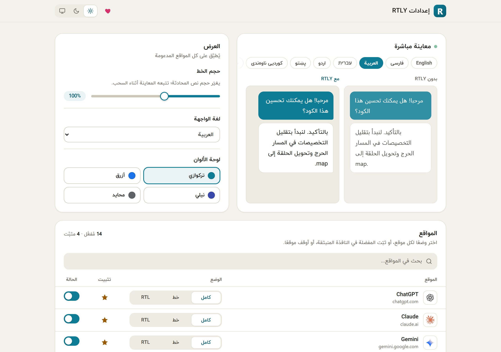

Interface languages#
Fourteen of the 15 languages are written right to left, and the whole popup and settings page flip with them.
| Language | Name shown in the picker | Author's rating | Strings still in English |
|---|---|---|---|
| English | English | Source language | 0 |
| Persian | فارسی | Marked as reviewed | 0 |
| Arabic | العربية | Marked as reviewed | 0 |
| Hebrew | עברית | Marked as reviewed | 0 |
| Urdu | اردو | High confidence | 0 |
| Pashto | پښتو | Good | 8 |
| Central Kurdish | کوردیی ناوەندی | Good | 8 |
| Sindhi | سنڌي | Lowest confidence | 8 |
| Uyghur | ئۇيغۇرچە | Good | 8 |
| Yiddish | ייִדיש | High confidence | 8 |
| Western Punjabi | پنجابی (شاہمُکھی) | Strongest of the five newer ones | 8 |
| South Azerbaijani | تۆرکجه | Draft, needs native review | 8 |
| Saraiki | سرائیکی | Draft, needs native review | 8 |
| Balochi | بلوچی | Draft, needs native review | 8 |
| Kashmiri | کٲشُر | Draft, needs native review | 8 |
The rating column is the author's own assessment, taken from the source. No translation was checked by an independent native speaker for this guide. If you can improve one, use the translation fix form or send a pull request.
How the language is chosen#
- The language you pick in UI language on the settings page, if you have picked one.
- Otherwise, your browser's language, if it is one of the 15 (a region such as
fa-IRis reduced tofa). - Otherwise, English.
A missing translation falls back to English, word by word.
Text the browser shows#
A few strings are not part of the page: the extension's name and description on the extensions page, the shortcut's label and the right-click menu item. These come from the browser's own translation system. They exist in English, Persian, Arabic, Hebrew, Urdu, Pashto, Central Kurdish, Sindhi, Uyghur and Yiddish. For Western Punjabi, South Azerbaijani, Saraiki, Balochi and Kashmiri the browser shows English there.
The chat itself#
The interface language has nothing to do with the language of your chats. RTLY decides each message's direction from its own text, in any language, whatever the interface language is.
Themes#
Choose light, dark or system from the popup menu or the settings header. With system, RTLY follows your operating system. The theme applies to RTLY's own pages; it does not change the chat sites.
Color palettes#
Teal is the default. Blue, indigo and neutral (gray) change only the accent color. Pick one in the popup menu or in Color palette on the settings page.
This guide#
This guide has a light and a dark theme too (the button in the header). Its home page, installation page, quick start and privacy page are also available in Persian.